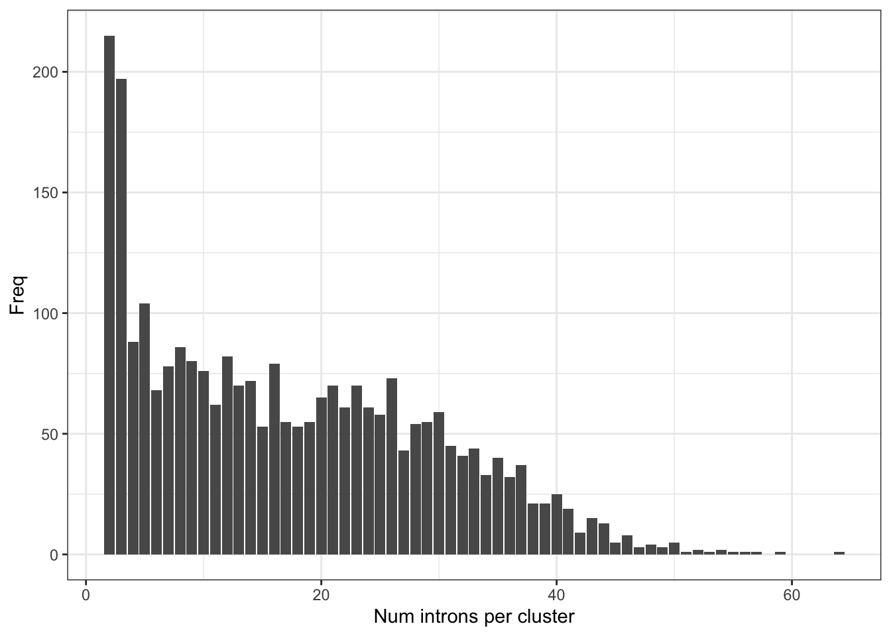
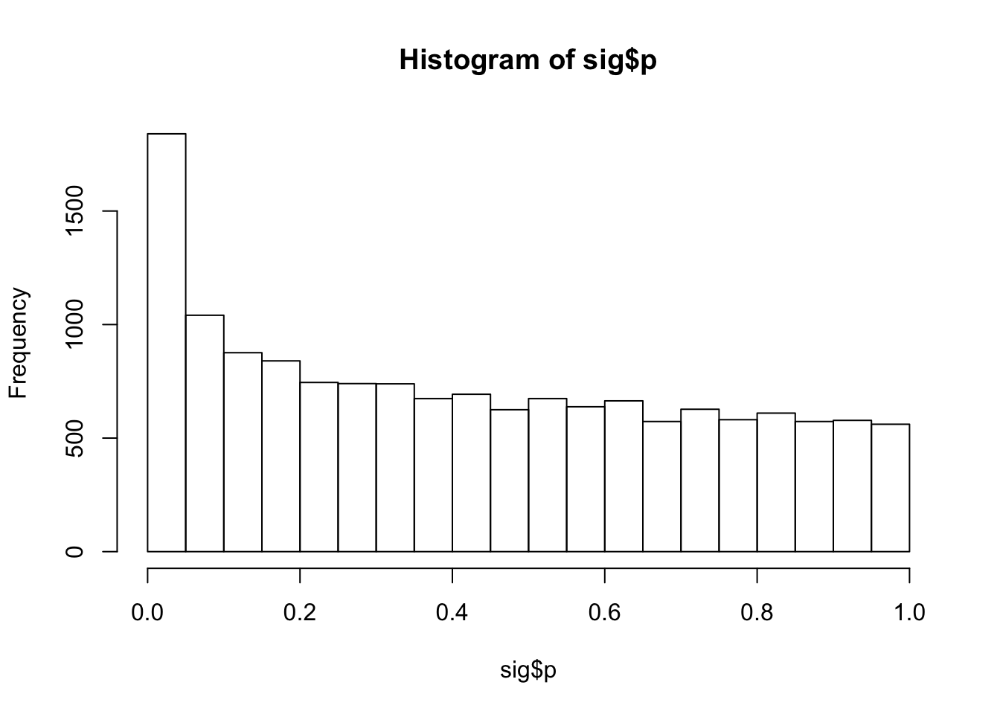
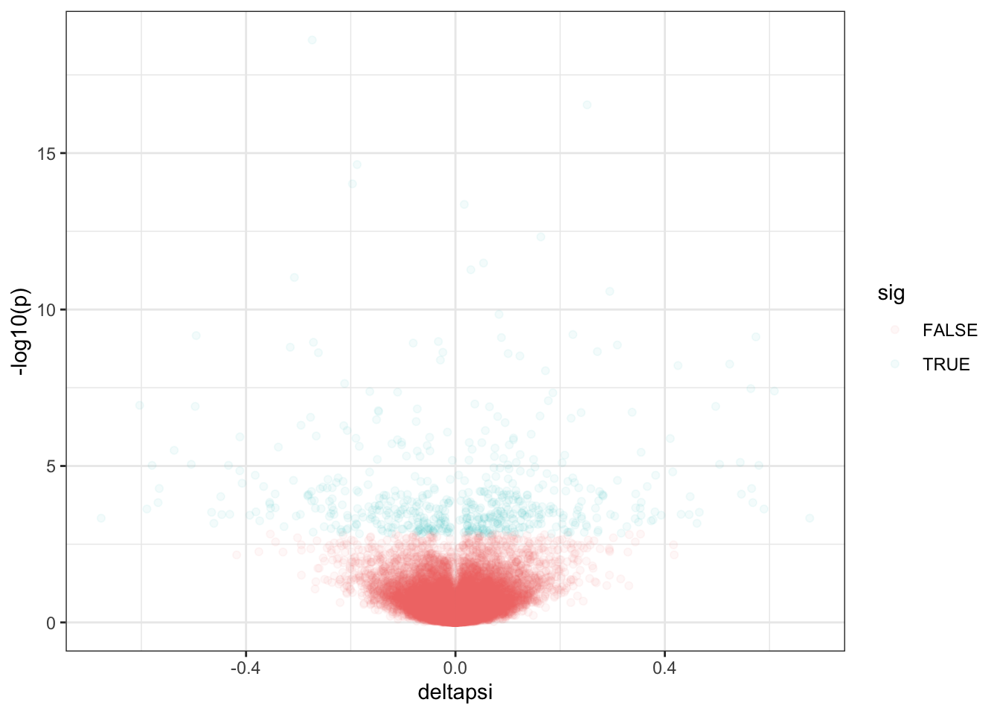
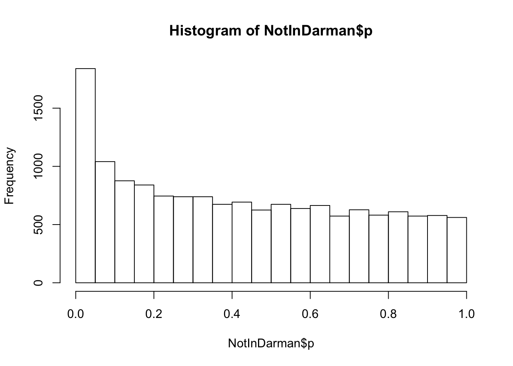
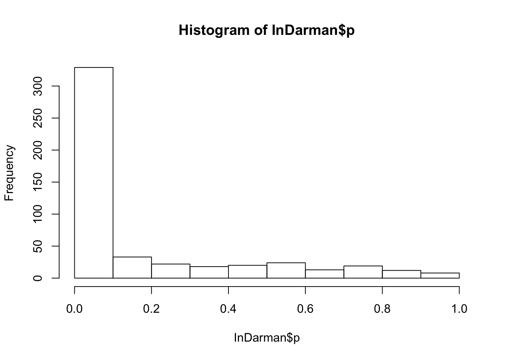
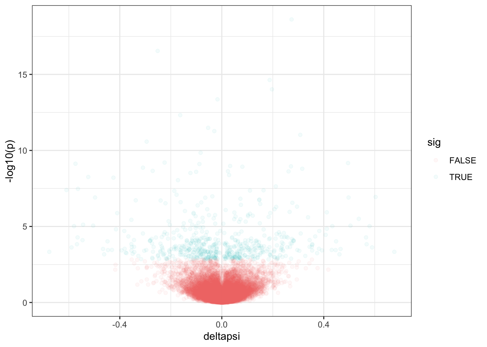
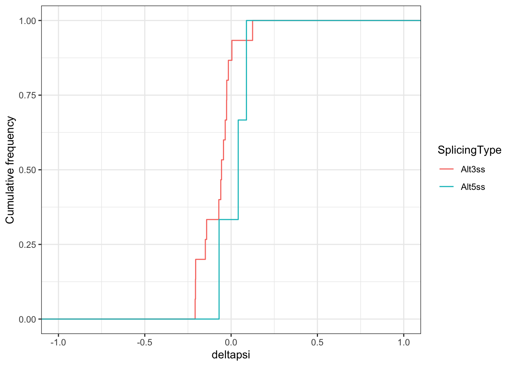

Last updated: 2019-12-06
Checks: 6 1
Knit directory: rna-seq-dhx38/analysis/
This reproducible R Markdown analysis was created with workflowr (version 1.5.0). The Checks tab describes the reproducibility checks that were applied when the results were created. The Past versions tab lists the development history.
The R Markdown is untracked by Git. To know which version of the R Markdown file created these results, you’ll want to first commit it to the Git repo. If you’re still working on the analysis, you can ignore this warning. When you’re finished, you can run wflow_publish to commit the R Markdown file and build the HTML.
Great job! The global environment was empty. Objects defined in the global environment can affect the analysis in your R Markdown file in unknown ways. For reproduciblity it’s best to always run the code in an empty environment.
The command set.seed(20191126) was run prior to running the code in the R Markdown file. Setting a seed ensures that any results that rely on randomness, e.g. subsampling or permutations, are reproducible.
Great job! Recording the operating system, R version, and package versions is critical for reproducibility.
Nice! There were no cached chunks for this analysis, so you can be confident that you successfully produced the results during this run.
Great job! Using relative paths to the files within your workflowr project makes it easier to run your code on other machines.
Great! You are using Git for version control. Tracking code development and connecting the code version to the results is critical for reproducibility. The version displayed above was the version of the Git repository at the time these results were generated.
Note that you need to be careful to ensure that all relevant files for the analysis have been committed to Git prior to generating the results (you can use wflow_publish or wflow_git_commit). workflowr only checks the R Markdown file, but you know if there are other scripts or data files that it depends on. Below is the status of the Git repository when the results were generated:
Ignored files:
Ignored: .Rhistory
Ignored: .Rproj.user/
Untracked files:
Untracked: analysis/20191206_DifferentialSplicingControl.Rmd
Untracked: data/sf3b1_data/
Unstaged changes:
Modified: analysis/20191203_DifferentialSplicing.Rmd
Note that any generated files, e.g. HTML, png, CSS, etc., are not included in this status report because it is ok for generated content to have uncommitted changes.
There are no past versions. Publish this analysis with wflow_publish() to start tracking its development.
To go along with the analysis I did on DHX38 samples, I wanted to also do something that could serve as a positive control to make sure my analyses is sound and sensitive to pick up on effects that we know to be real. So here, I did a brief differential splicing analysis of samples which should give a known phenotype. SF3B1 mutants cause increased alt 3’ss usage. I took data from Darman et al (pre-processed into junction counts by snaptron and analyzed in with the same leafcutter pipeline for Chris’ DHX38 samples. The samples were Nalm6 isogenic cell lines with and without a SF3B1 K700E knockin allele; 3 replicates of mutant (K700E) and 2 replicates of WT.
First, load necessary libraries
library(tidyverse)
library(knitr)Load in leafcutter processed data.
sig <- read.table("../data/sf3b1_data/leafcutter.ds.cluster_sig.txt.gz", sep='\t', header=T)
head(sig) %>% kable()| cluster | status | loglr | df | p | p.adjust | genes |
|---|---|---|---|---|---|---|
| chr1:clu_1_- | <=1 sample with coverage>min_coverage | NA | NA | NA | NA | NA |
| chr1:clu_10_- | Success | 2.1179106 | 4 | 0.3750307 | 0.7816801 | UBE2J2 |
| chr1:clu_100_- | Success | 0.8541075 | 2 | 0.4256629 | 0.8071348 | CROCCP2 |
| chr1:clu_1000_+ | Success | 0.1793576 | 2 | 0.8358069 | 0.9578327 | CCDC28B |
| chr1:clu_1001_+ | Success | 6.0030493 | 8 | 0.1509320 | 0.5946918 | EIF3I |
| chr1:clu_1002_+ | Success | 1.9161822 | 3 | 0.2801440 | 0.7219076 | EIF3I |
effect_sizes <- read.table("../data/sf3b1_data/leafcutter.ds.effect_sizes.txt.gz", sep='\t', header=T)
head(effect_sizes) %>% kable()| intron | logef | K700E | WT | deltapsi |
|---|---|---|---|---|
| chr1:1263387:1267733:clu_10_- | 0.5730873 | 0.0078501 | 0.0165023 | 0.0086522 |
| chr1:1263387:1267862:clu_10_- | -0.2769173 | 0.4876222 | 0.4381295 | -0.0494928 |
| chr1:1263387:1273666:clu_10_- | 0.0681116 | 0.0230059 | 0.0291878 | 0.0061820 |
| chr1:1267993:1272853:clu_10_- | -0.2715277 | 0.0223636 | 0.0202023 | -0.0021613 |
| chr1:1267993:1273666:clu_10_- | -0.0927539 | 0.4591583 | 0.4959782 | 0.0368199 |
| chr1:16626006:16626353:clu_100_- | -0.1590048 | 0.6370657 | 0.5707452 | -0.0663206 |
Check some basic things about the data.
#how many introns for each cluster
effect_sizes %>%
mutate(Cluster=sub(".+?:(clu_.+?_.+?)","\\1",intron)) %>%
group_by(Cluster) %>%
tally() %>%
ggplot(aes(x=n)) +
geom_bar(breaks=40) +
xlab("Num introns per cluster") +
ylab("Freq") +
theme_bw()
#histogram of Pvalues
hist(sig$p)
#how many significant (p.adjust < 0.1)
table(sig$p.adjust<0.1) %>% kable()| Var1 | Freq |
|---|---|
| FALSE | 14313 |
| TRUE | 579 |
# merge significance and cluster tables
leafcutter.merged <- effect_sizes %>%
mutate(cluster=gsub("(.+?:).+?:.+?:(clu.+?)", "\\1\\2", intron, perl=T)) %>%
mutate(junc_id=gsub("(.+?:.+?:.+?):clu.+", "\\1", intron, perl=T)) %>%
left_join(sig, by="cluster")
# volcano plot of cluster-pvalues and largest within-cluster-delta-psi
leafcutter.merged %>%
mutate(abs.deltapsi = abs(deltapsi)) %>%
group_by(cluster) %>%
top_n(n=1, abs.deltapsi) %>%
mutate(sig=p.adjust<0.05) %>%
ggplot(aes(x=deltapsi, y=-log10(p), color=sig)) +
geom_point(alpha=0.05) +
theme_bw()
Now check that differential splicing analysis works.
Here I will load the list of all ~800 splice junctions Darman et al identified as significantly differntially spliced and check that this leafcutter pipeline also identifies them as significantly differentially spliced.
Note that Darman et al did a bunch of separate analyses of SF3B1 mutants in various tissue or cell types and combined the list of differentially spliced junctions into a single large list (which I am loading here), even though I just used a subset of their samples to redo differential splicing analysis. Therefore, based on the fact that I am using only a small subset of their data in only one cell type (as opposed to the many analyses they combined), I may not expect to recover all of their significant introns.
#Load list of differential junctions
DarmanJunctionsList <- read.table('../data/sf3b1_data/DarmanDiffJunctions.LiftedToHg38.bed.txt', header=F)
# Make new id, for easier use in later filtering. Note that coordinates may need to add 1, compared to leafcutter coordinates
DarmanJunctionsList$junc_id <- paste(DarmanJunctionsList$V1, DarmanJunctionsList$V2 + 1, DarmanJunctionsList$V3 + 1, sep=":")
NotInDarman<-leafcutter.merged %>%
filter(!junc_id %in% DarmanJunctionsList$junc_id) %>%
dplyr::distinct(cluster, .keep_all=T)
InDarman<-leafcutter.merged %>%
filter(junc_id %in% DarmanJunctionsList$junc_id) %>%
dplyr::distinct(cluster, .keep_all=T)
#histogram of P-values for not containing introns siginificant in Darman et al
hist(NotInDarman$p)
#histogram of P-values for clusters with introns sig in Darman
hist(InDarman$p)
## QQ-plot of cluster P-vals, grouped by whether cluster contains in intron identified as differentially spliced in Daraman et al.
ggplot(NotInDarman, aes(color="NotInDarman", y=-log10(sort(p)), x=-log10(1:length(p)/length(p)))) +
geom_point() +
geom_point(data=InDarman, aes(color="InDarman")) +
xlab("-log10(Theoretical-Pvalues)") +
ylab("-log10(Observed-Pvalues)") +
geom_abline() +
theme_bw() +
theme(legend.position="bottom") +
theme(legend.title=element_blank())
Ok good. The introns Darman found to be significant, I also found to be significant with smaller P-values.
Now classify splicing types as I did in the DHX38 analysis.
#Reclassify splicing types
leafcutter.merged.AS.reclassified <- leafcutter.merged %>%
dplyr::select(intron) %>%
separate(intron, into=c("chrom", "start", "stop", "cluster"), sep=":", remove=F) %>%
mutate(strand=sub("clu_\\d+_(.+)", "\\1", cluster)) %>%
mutate(
SpliceDonorCoord=case_when(
strand=="+" ~ paste(chrom, start, strand),
strand=="-" ~ paste(chrom, stop, strand)),
SpliceAcceptorCoord=case_when(
strand=="+" ~ paste(chrom, stop, strand),
strand=="-" ~ paste(chrom, start, strand))) %>%
dplyr::select(intron, cluster, SpliceDonorCoord,SpliceAcceptorCoord) %>%
add_count(cluster, name="IntronsPerCluster") %>%
add_count(SpliceDonorCoord, name="SpliceDonorCount") %>%
add_count(SpliceAcceptorCoord, name="SpliceAcceptorCount") %>%
mutate(SplicingType=case_when(
IntronsPerCluster==2 & SpliceDonorCount==2 ~ "Alt3ss",
IntronsPerCluster==2 & SpliceAcceptorCount==2 ~ "Alt5ss",
IntronsPerCluster==3 & SpliceDonorCount==2 & SpliceAcceptorCount==2 ~ "CassetteExonSkipped",
IntronsPerCluster==3 & SpliceDonorCount==1 & SpliceAcceptorCount==2 ~ "CassetteExonIncluded.DownstreamIntron",
IntronsPerCluster==3 & SpliceDonorCount==2 & SpliceAcceptorCount==1 ~ "CassetteExonIncluded.UpstreamIntron",
IntronsPerCluster==3 & SpliceDonorCount==3 & SpliceAcceptorCount==1 ~ "Alt3ss",
IntronsPerCluster==3 & SpliceDonorCount==1 & SpliceAcceptorCount==3 ~ "Alt5ss",
IntronsPerCluster>=4 ~ "Complex"
)) %>%
dplyr::select(intron, SplicingType) %>%
left_join(leafcutter.merged, by="intron")
#Number of splicing types
table(leafcutter.merged.AS.reclassified$SplicingType) %>% kable()| Var1 | Freq |
|---|---|
| Alt3ss | 286 |
| Alt5ss | 199 |
| CassetteExonIncluded.DownstreamIntron | 177 |
| CassetteExonIncluded.UpstreamIntron | 177 |
| CassetteExonSkipped | 177 |
| Complex | 45266 |
# Check that the classifications make sense by manually inspecting some intron coordinates for a few clusters
head(leafcutter.merged.AS.reclassified) %>% kable()| intron | SplicingType | logef | K700E | WT | deltapsi | cluster | junc_id | status | loglr | df | p | p.adjust | genes |
|---|---|---|---|---|---|---|---|---|---|---|---|---|---|
| chr1:1263387:1267733:clu_10_- | Complex | 0.5730873 | 0.0078501 | 0.0165023 | 0.0086522 | chr1:clu_10_- | chr1:1263387:1267733 | Success | 2.1179106 | 4 | 0.3750307 | 0.7816801 | UBE2J2 |
| chr1:1263387:1267862:clu_10_- | Complex | -0.2769173 | 0.4876222 | 0.4381295 | -0.0494928 | chr1:clu_10_- | chr1:1263387:1267862 | Success | 2.1179106 | 4 | 0.3750307 | 0.7816801 | UBE2J2 |
| chr1:1263387:1273666:clu_10_- | Complex | 0.0681116 | 0.0230059 | 0.0291878 | 0.0061820 | chr1:clu_10_- | chr1:1263387:1273666 | Success | 2.1179106 | 4 | 0.3750307 | 0.7816801 | UBE2J2 |
| chr1:1267993:1272853:clu_10_- | Complex | -0.2715277 | 0.0223636 | 0.0202023 | -0.0021613 | chr1:clu_10_- | chr1:1267993:1272853 | Success | 2.1179106 | 4 | 0.3750307 | 0.7816801 | UBE2J2 |
| chr1:1267993:1273666:clu_10_- | Complex | -0.0927539 | 0.4591583 | 0.4959782 | 0.0368199 | chr1:clu_10_- | chr1:1267993:1273666 | Success | 2.1179106 | 4 | 0.3750307 | 0.7816801 | UBE2J2 |
| chr1:16626006:16626353:clu_100_- | Complex | -0.1590048 | 0.6370657 | 0.5707452 | -0.0663206 | chr1:clu_100_- | chr1:16626006:16626353 | Success | 0.8541075 | 2 | 0.4256629 | 0.8071348 | CROCCP2 |
MinorIsoforms <- leafcutter.merged.AS.reclassified %>%
filter(p.adjust<0.3) %>%
group_by(cluster) %>%
top_n(-1, WT) %>%
ungroup()
#histogram of splicing fraction of minor isoforms (intron with smallest splicing fraction within cluster)
hist(MinorIsoforms$WT)MajorIsoforms <- leafcutter.merged.AS.reclassified %>%
filter(p.adjust<0.3) %>%
group_by(cluster) %>%
top_n(1, WT) %>%
ungroup()
#histogram of splicing fraction of major isoforms (intron with largest splicing fraction within cluster)
hist(MajorIsoforms$WT)Now let’s check that we see the expected effect on alt 3’ss usage.
#table of splicing types of all clusters
table(leafcutter.merged.AS.reclassified$SplicingType) %>% kable()| Var1 | Freq |
|---|---|
| Alt3ss | 286 |
| Alt5ss | 199 |
| CassetteExonIncluded.DownstreamIntron | 177 |
| CassetteExonIncluded.UpstreamIntron | 177 |
| CassetteExonSkipped | 177 |
| Complex | 45266 |
#splicing types of significant clusters only
leafcutter.merged.AS.reclassified %>%
filter(p.adjust<0.3) %>% pull(SplicingType) %>% table() %>%
kable()| . | Freq |
|---|---|
| Alt3ss | 31 |
| Alt5ss | 6 |
| CassetteExonIncluded.DownstreamIntron | 11 |
| CassetteExonIncluded.UpstreamIntron | 11 |
| CassetteExonSkipped | 11 |
| Complex | 4575 |
Ok as expected, there does seem to be an enrichment for alt3ss.
Now let’s check the sign of the effect size. We expect mostly negative effect sizes (the way I coded this differential splicing analysis was such that splicing increases in the SF3B1 mutant samples have negative effect sizes)
#Note the sign of logef, compared the splicing ratios in WT and SF3B1 K700E
head(leafcutter.merged) %>% kable()| intron | logef | K700E | WT | deltapsi | cluster | junc_id | status | loglr | df | p | p.adjust | genes |
|---|---|---|---|---|---|---|---|---|---|---|---|---|
| chr1:1263387:1267733:clu_10_- | 0.5730873 | 0.0078501 | 0.0165023 | 0.0086522 | chr1:clu_10_- | chr1:1263387:1267733 | Success | 2.1179106 | 4 | 0.3750307 | 0.7816801 | UBE2J2 |
| chr1:1263387:1267862:clu_10_- | -0.2769173 | 0.4876222 | 0.4381295 | -0.0494928 | chr1:clu_10_- | chr1:1263387:1267862 | Success | 2.1179106 | 4 | 0.3750307 | 0.7816801 | UBE2J2 |
| chr1:1263387:1273666:clu_10_- | 0.0681116 | 0.0230059 | 0.0291878 | 0.0061820 | chr1:clu_10_- | chr1:1263387:1273666 | Success | 2.1179106 | 4 | 0.3750307 | 0.7816801 | UBE2J2 |
| chr1:1267993:1272853:clu_10_- | -0.2715277 | 0.0223636 | 0.0202023 | -0.0021613 | chr1:clu_10_- | chr1:1267993:1272853 | Success | 2.1179106 | 4 | 0.3750307 | 0.7816801 | UBE2J2 |
| chr1:1267993:1273666:clu_10_- | -0.0927539 | 0.4591583 | 0.4959782 | 0.0368199 | chr1:clu_10_- | chr1:1267993:1273666 | Success | 2.1179106 | 4 | 0.3750307 | 0.7816801 | UBE2J2 |
| chr1:16626006:16626353:clu_100_- | -0.1590048 | 0.6370657 | 0.5707452 | -0.0663206 | chr1:clu_100_- | chr1:16626006:16626353 | Success | 0.8541075 | 2 | 0.4256629 | 0.8071348 | CROCCP2 |
#Now make plots to get to know if minor isoform alt5'ss have generally gone down. Same for alt 3'ss.
MinorIsoforms %>%
filter(SplicingType %in% c("Alt5ss", "Alt3ss")) %>%
ggplot(aes(x=deltapsi, color=SplicingType)) +
stat_ecdf(geom = "step") +
xlim(c(-1,1))+
ylab("Cumulative frequency") +
theme_bw()
MinorIsoforms %>%
filter(SplicingType %in% c("Alt3ss")) %>% pull(deltapsi) %>%
wilcox.test()
Wilcoxon signed rank test
data: .
V = 11, p-value = 0.003357
alternative hypothesis: true location is not equal to 0For minor isoforms of alt3’ss, the effect size (deltapsi) is negative in ~80% of significant cases, meaning upregulated in the K700E mutant. This is more than expected by chance.
This analyses seems to have worked as expected.
sessionInfo()R version 3.6.1 (2019-07-05)
Platform: x86_64-apple-darwin15.6.0 (64-bit)
Running under: macOS Catalina 10.15.1
Matrix products: default
BLAS: /Library/Frameworks/R.framework/Versions/3.6/Resources/lib/libRblas.0.dylib
LAPACK: /Library/Frameworks/R.framework/Versions/3.6/Resources/lib/libRlapack.dylib
locale:
[1] en_US.UTF-8/en_US.UTF-8/en_US.UTF-8/C/en_US.UTF-8/en_US.UTF-8
attached base packages:
[1] stats graphics grDevices utils datasets methods base
other attached packages:
[1] knitr_1.26 forcats_0.4.0 stringr_1.4.0 dplyr_0.8.3
[5] purrr_0.3.3 readr_1.3.1 tidyr_1.0.0 tibble_2.1.3
[9] ggplot2_3.2.1 tidyverse_1.2.1
loaded via a namespace (and not attached):
[1] tidyselect_0.2.5 xfun_0.11 haven_2.2.0 lattice_0.20-38
[5] colorspace_1.4-1 vctrs_0.2.0 generics_0.0.2 htmltools_0.4.0
[9] yaml_2.2.0 rlang_0.4.1 later_1.0.0 pillar_1.4.2
[13] withr_2.1.2 glue_1.3.1 modelr_0.1.5 readxl_1.3.1
[17] lifecycle_0.1.0 munsell_0.5.0 gtable_0.3.0 workflowr_1.5.0
[21] cellranger_1.1.0 rvest_0.3.5 evaluate_0.14 labeling_0.3
[25] httpuv_1.5.2 highr_0.8 broom_0.5.2 Rcpp_1.0.2
[29] promises_1.1.0 backports_1.1.5 scales_1.0.0 jsonlite_1.6
[33] fs_1.3.1 hms_0.5.2 digest_0.6.22 stringi_1.4.3
[37] grid_3.6.1 rprojroot_1.3-2 cli_1.1.0 tools_3.6.1
[41] magrittr_1.5 lazyeval_0.2.2 crayon_1.3.4 pkgconfig_2.0.3
[45] zeallot_0.1.0 ellipsis_0.3.0 xml2_1.2.2 lubridate_1.7.4
[49] assertthat_0.2.1 rmarkdown_1.17 httr_1.4.1 rstudioapi_0.10
[53] R6_2.4.1 nlme_3.1-142 git2r_0.26.1 compiler_3.6.1